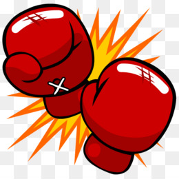

Fatos sobre o Stomatopoda
Informações Gerais
Stomatopoda (ou estomatópode), chamados popularmente de tamarutacas ou de lacraias-do-mar no Brasil, é uma ordem de
crustáceos marinhos da subclasse Hoplocarida, que agrupa cerca de 400 espécies, caracterizadas principalmente pela morfologia da
segunda pata torácica, que é modificada em apêndice subquelado, lembrando uma pata de louva-a-deus.
Nome científico: Odontodactylus scyllarus.

| Classificação científica | |
|---|---|
| Reino: | Animalia |
| Filo: | Arthropoda |
| Subfilo: | Crustacea |
| Classe: | Malacostraca |
| Subclasse: | Hoplocarida |
| Ordem: | Stomatopoda |
Fato 1: Boxeador Nato

Stomatopoda, são capazes de desferir um dos mais rápidos e violentos golpes do reino animal, um soco que pode apresentar a
velocidade de um tiro calibre .22 (equivalente a 720km/h) e uma força de impacto de 60 kg/cm².
Essa força esmagadora é a responsável pelo seu título de "lagosta-boxeadora" e é capaz de facilmente quebrar a carapaça de
um caranguejo, as conchas duras e calcificadas de gastrópodes ou até mesmo quebrar o vidro reforçado de um aquário.
Fato 2: Visão Colorida

Stomatopoda, possuem o mais complexo sistema de visão de cores do mundo animal, pois enxergam 12 cores primárias,
correspondentes aos 12 pigmentos distintos presentes em sua retina.